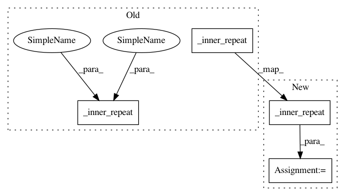

33368888efbdeaf2402eb52d14f1c4ea0c853909,gpytorch/lazy/matmul_lazy_variable.py,MatmulLazyVariable,_batch_get_indices,#MatmulLazyVariable#Any#Any#Any#,67
Before Change
left_vals = self.lhs._batch_get_indices(
_outer_repeat(batch_indices, inner_size),
_outer_repeat(left_indices, inner_size),
_inner_repeat(inner_indices, outer_size),
)
right_vals = self.rhs._batch_get_indices(
_outer_repeat(batch_indices, inner_size),
_inner_repeat(inner_indices, outer_size),
_outer_repeat(right_indices, inner_size),
)
After Change
batch_indices = _outer_repeat(batch_indices, inner_size)
left_indices = _outer_repeat(left_indices, inner_size)
right_indices = _outer_repeat(right_indices, inner_size)
inner_indices = _inner_repeat(inner_indices, outer_size)
left_vals = self.lhs._batch_get_indices(
batch_indices, left_indices, inner_indices
)
In pattern: SUPERPATTERN
Frequency: 4
Non-data size: 4
Instances
Project Name: cornellius-gp/gpytorch
Commit Name: 33368888efbdeaf2402eb52d14f1c4ea0c853909
Time: 2018-08-07
Author: gpleiss@gmail.com
File Name: gpytorch/lazy/matmul_lazy_variable.py
Class Name: MatmulLazyVariable
Method Name: _batch_get_indices
Project Name: cornellius-gp/gpytorch
Commit Name: 33368888efbdeaf2402eb52d14f1c4ea0c853909
Time: 2018-08-07
Author: gpleiss@gmail.com
File Name: gpytorch/lazy/matmul_lazy_variable.py
Class Name: MatmulLazyVariable
Method Name: _get_indices
Project Name: cornellius-gp/gpytorch
Commit Name: 33368888efbdeaf2402eb52d14f1c4ea0c853909
Time: 2018-08-07
Author: gpleiss@gmail.com
File Name: gpytorch/lazy/root_lazy_variable.py
Class Name: RootLazyVariable
Method Name: _batch_get_indices
Project Name: cornellius-gp/gpytorch
Commit Name: 33368888efbdeaf2402eb52d14f1c4ea0c853909
Time: 2018-08-07
Author: gpleiss@gmail.com
File Name: gpytorch/lazy/root_lazy_variable.py
Class Name: RootLazyVariable
Method Name: _get_indices